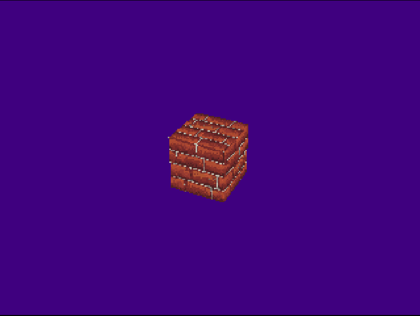

PlayStation Homebrew
The following are games I developed from scratch for the PlayStation 1 console. These games were built with the purpose of study and fun, but are also great ways to study legacy hardware and how to properly leverage programming skills on limited situations.
These games are either on .ISO or .CHD format. They can be played on an
emulator such as DuckStation or pcsx-redux. However, I've taken extra measures
to ensure that it is run on actual real hardware – these demos were tested on
a modded SCPH-5501, burned on high quality media.
NOTE: Links for playing games online use Emulator.js and therefore run on
pcsx-ReARMed, so you might find some weird problems e.g. audio not playing. If
you wish to play these games with no problems, consider using a proper emulator.
SONIC THE HEDGEHOG XA


SONIC THE HEDGEHOG XA – formerly known as engine-psx – is, as the name
suggests, a study on building a 2D platformer game heavily inspired on Sonic The
Hedgehog. Given its premise, it is not wrong to assume that the best way to
create something that resembles classic Sonic from Sega Genesis era is… to
build a Sonic fan-game.
The name comes from the fact that it uses level music with CD-XA format instead of CD-DA (Red Book audio), and also to somewhat resemble Sonic CD, which is its main source of inspiration.
This game is also built using PSn00bSDK by Lameguy64 instead of Psy-Q.
NOTE: This game has no audio when playing online. This is an emulator limitation, so if you wish to have the full experience, you'll have to download the .CHD and run it on an emulator.
Latest build date:
Wipefaux

Wipefaux is a semi-clone of the game WipEout. This demo is built for educational purposes on Pikuma's PSX development course. There is only a playable build available.
Build date:
Rotating Brick (GAME.ISO)

A small example of a rotating cube with brick texture. Made with Psy-Q SDK. There is only a playable build available.
Build date: